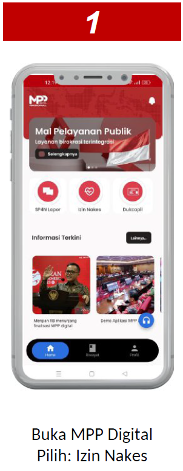
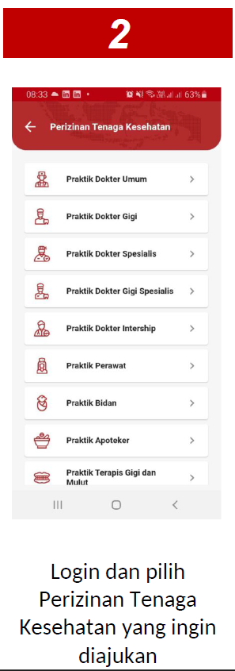
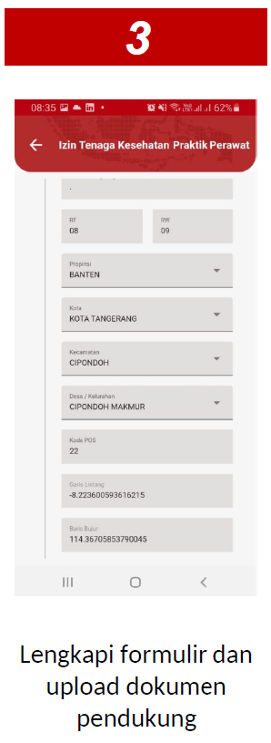

Deskripsi
Praktik Perawat
Praktik Bidan
Praktik Terapis Gigi & Mulut
Praktik Tenaga Teknis Kefarmasian
Praktik Tenaga Sanitarian
Praktik Tenaga Gizi
Praktik Fisioterapis
Praktik Okupasi Terapis
Praktik Terapis Wicara
Praktik Akupuntur Terapis
Praktik Perekam Medis
Praktik Optometris
Praktik Teknisi Gigi
Praktik Penata Anestesi
Praktik Radiografer
Praktik Elektromedis
Praktik Ahli Tenaga Laboratorium Medik
Praktik Ortosis Prosetesis
Praktik Teknisi Kardiovaskular
Praktik Tenaga Psikologi Klinis
Panduan
Tata cara layanan izin tenaga kesehatan melalui MPP Digital
Permohonan SIP melalui MPP Digital
1
Download aplikasi MPP Digital melalui alamat : https://admin.mppdigital.go.id/mppd.apk
(khusus ponsel Android)
2
Ikuti petunjuk penginstalan serta registrasi untuk masuk ke aplikasi MPP Digital
(berlaku 1 akun untuk nomor HP)
3
Apabila sudah terinstal, akan muncul shortcut aplikasi MPP Digital di menu HP
4
Login
5
Pilih menu Izin Nakes dan pastikan anda sudah terdaftar pada SISDMK (Sistem Informasi Sumber Daya Manusia Kesehatan)
6
Pilih ajukan izin lalu lengkapi formulir dan upload dokumen pendukung
7
Apabila menemui kendala dalam instalasi dan registrasi MPP Digital, dapat menghubungi nomor MPP (081326703476)
Langkah pendaftaran pelayanan adminduk melalui menu IKD di aplikasi MPP Digital


